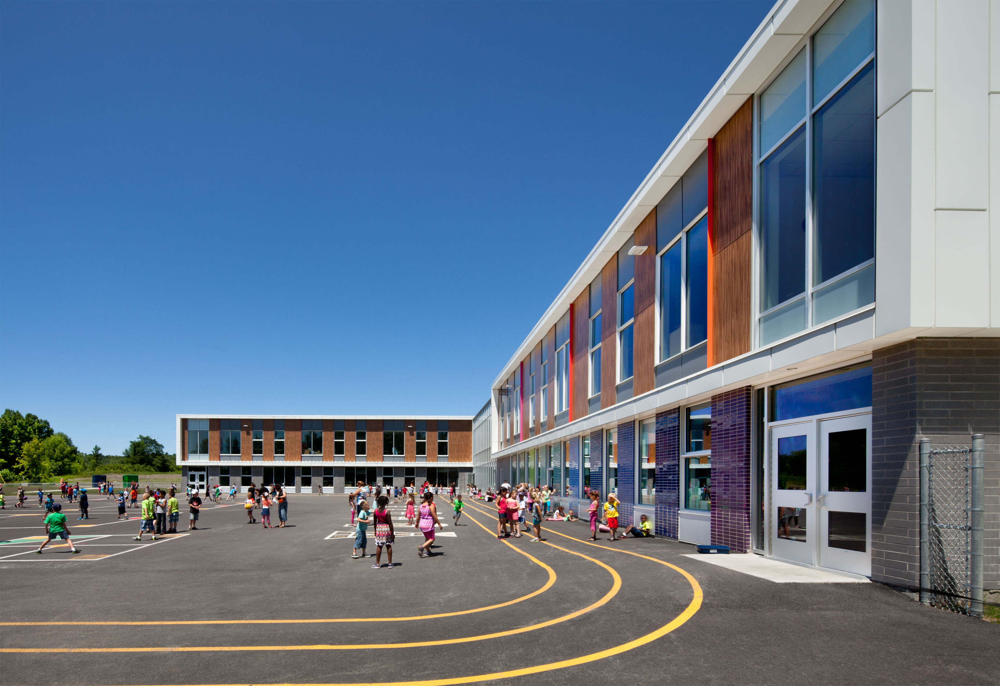
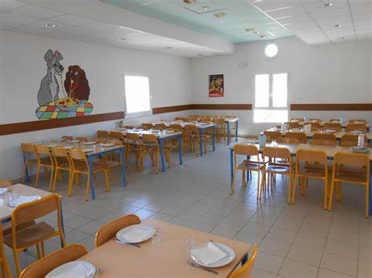

L’école à Bréhat
L’ école primaire de Kérano accueille une trentaine d’élèves répartis en deux classes :
- de la maternelle au CP avec une professeur des écoles et une ATSEM
- du CE1 au CM2 avec la directrice.
Directrice : Madame Maud GALANT
Kerano 22870 ILE DE BREHAT
Tel : 02 96 20 02 63
Email : ecole.0221447d@ac-rennes.fr

Les documents utiles à télécharger
Inscription à l’école primaire
Dossier inscription : école primaire KeranoLa cantine
Cantine scolaire : sur inscriptionLocal : école du Bas
Nouveauté 2021 : à partir d’avril 2021, le prix du repas cantine est indexé sur votre quotient familial CAF. Pensez à vous transmettre votre attestation.
Dossier inscription : cantine scolaireLa garderie
Garderie périscolaire : de 16h15 à 17h30, gratuite sur inscriptionLocal : école du Bas
Dossier inscription : garderie périscolaire
Les transports scolaires
Transports scolaires sur le territoire communal : Petit Train et vedettes. Le Petit Train pour la vedette de 7h20 est exclusivement réservé aux scolaires. Inscription auprès du service AXEO : https://www.axeo.bzh/se-deplacer/axeo-scolaire/
Information mairie besoins transports scolaires

Les menus de la cantine (octobre 2021)